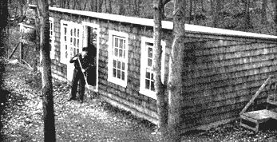
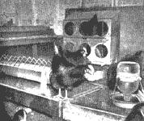
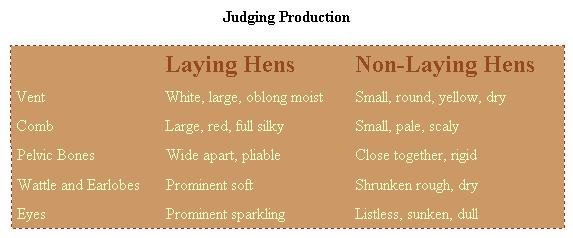
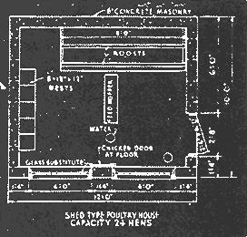

PERHAPS this sounds fantastic but we find that it's not much more work producing our own eggs than it is to make a weekly trip to a poultry farm to be sure we actually do have strictly fresh eggs. Our laying flock of 20 R.O.P. New Hampshires requires about 7 minutes care a day - and gives us on the average 11 eggs daily, year around.
Twenty hens require an 8 x 10 foot house which costs new about $75. But if your family uses only four eggs a day a house for eight hens can be bought or made for as little as $30.
Eggs were the first project we attempted when we moved out of the city. We estimated how many eggs we'd like to eat. With three in the family we thought we wouldn't need more than two dozen a week 3 1/2 a day.
In estimating year around egg production, figure a hen will lay an egg every other day - if you can use six eggs a day, then plan on having a dozen hens. So, we bought a ready-made poultry house for $28., 7 pullets for $11:00; plus a water pan for 50 cents, a feeder, 69 cents.
If you can drive a nail and cut a straight line with a saw, you can build your own poultry house. If you want to, you can buy a "knock-down" poultry house and assemble it. You'll find them advertised in poultry magazines - be sure to write for catalogues and compare prices - they vary quite widely.
For the first week our 7 pullets (young hens beginning to lay for the first time) didn't lay an egg. One evening when I came from work, I found my wife all excited - our flock had produced an egg! That egg, counting the feed we had on hand cost us $45.89.
But during the next eight fall and winter months those 7 hens laid 646 eggsnearly 54 dozen - 6 1/2 dozen a month.
During that time we spent $14.30 on feed - an average of 26 cents per dozen eggs. In our locality eggs sold for 60 cents a dozen. In short, we had saved $32.40 on eggs and at any time could have sold our hens as fowl for 25 cents a pound or $11.20.
But with our eggs only costing u s 26 cents a dozen instead of 60, we began using more. That's why we have increased our flock. The next spring we raised 25 of the finest R.O.P. (Record of Performance) New Hampshire pullets (cost: 50 cents apiece as day old chicks), culled them down to 20, and began getting more eggs than we could use. With these better laying birds our eggs cost only 16-18 cents a dozen for feed costs. We sell the surplus at 60 or 65 cents a dozen - and right where I work I have more customers than we can supply.
When we began studying up on chickens we found that there were many books on how to make a success of poultry commercially, but little information on raising a barnyard flock efficiently. Now, however, there are a number of good books - for example, G. T. Klein's "Starting Right With Poultry."
Many writers tell you any old building is suitable for poultry. But any old building and any old kind of equipment often result in a damp, drafty henhouse - probably ending up with your flock not laying and possibly getting sick.
A separate henhouse, or space in your small all-purpose barn, or a re modelled shed which gives 4-5 square feet of floor area per bird is needed. For a dozen hens a house 7' x 8' or thereabouts is satisfactory. The building should face south and permit plenty of sun deep into the building during winter. The house should be well-ventilated, but not drafty. Recent experiments show that it is better to give hens almost no air at all than have them exposed to a draft. Twenty hens give off a gallon of water per day - draft-free ventilation will keep this moisture from being absorbed in litter, doing away with frequent removal of same. With proper draft-free ventilation, you can put litter down in the fall, add more as needed during the winter, fork over weekly, and you should not have to change litter until spring. Then, old litter is used on the garden. But if litter becomes damp, change it right away.
Crushed sugar cane is excellent litter, deep straw or peanut shells are also good - all make good garden mulches. To obtain draft-free ventilation have windows in south only, and have them open in from the top, or hang regular double-window sash that can be regulated top and bottom.
The foundation of the house can be of concrete, which is best, or double-wooden floor with building paper and rat-proof wire between floors.
As for the interior of the chicken house, at the rear provide a dropping board 3 to 4 feet off the floor perhaps across the width of the house. Six to eight inches above the dropping board on supports, run a one-inch mesh wire. Provide roosts above wire, a foot apart. Allow 10 inches of roost per bird. The wire between roost and dropping board keeps hens clean and saves the eggs laid from the roost.
Nests - while they can be orange crates set a foot or so off the floor at the side of the house should have a piece of ordinary corrugated carton cut to cover the bottom, then straw or excelsior for nesting material. The corrugated cardboard saves many an egg from breaking, and if an egg should become broken or the nest become messy cleaning is simply a matter of removing the cardboard. Provide a nest for each 5 hens.
Also buy a good waterer - preferably one that has a kerosene or electric heater to keep water from freezing in winter. Get one large enough - our 20 hens drink about two gallons of water a day.
Your State Agricultural College will send you free building plans for a backyard laying house. You can get plans to build a mash and feed hopper from your local lumber man. But it's practically as cheap to buy a hopper from Sears Roebuck or Montgomery Ward or one of the poultry supply companies. The hopper should be well off the floor with a feeding platform that keeps feed clean and saves waste. Set the hopper and the water in the middle of the floor so that the birds can get the feed easily. (See diagram),
There are more different theories on feeding hens than feeding babies. Here is a simple, satisfactory way. In one large mash hopper (one foot long for each six hens) place a good egg mash in one half - and in the other scratch feed. Keep plenty of mash and scratch before the hens at all times. At first your hens will eat more scratch than mash, then gradually eat half mash, half scratch, which is what they should be eating for best results. (Hang an automatic feeder for oyster shells and grit from a side-wall).
Buy your feed from a hay and feed dealer with a good reputation. Keep a supply of feed on hand - don't let your feed get too low because feed deliveries are unpredictable. You can keep laying hens inside the poultry house all year around - they will lay as well as hens that have a yard. In winter an electric light with an inexpensive automatic switch which turns it on at 4 a.m. will increase your production - not because you're fooling the hens into thinking it's daylight, but because they can see to eat more egg - producing mash.
Mash means eggs - as they say. So keep your birds eating mash. If they drop off, moisten mash (in winter use hot water) and you'll be surprised how your hens will gobble it up.
"Cull" simply means to eliminate birds that seem sick, weak, or non-layers. Time was when characteristics showing good layers were not widely known, but today almost anyone can cull their flock by checking these characteristics:
Cull birds after dark. Take out of pen for table use those showing non-laying characteristics. Probably, at first, you won't trust your ability to cull. We were afraid we might "liquidate" a couple of valuable layers - so we kept the "cullers" in a small chicken house for two weeks to see if they were layers. They weren't.
If over 50% appear to be non-layers, probably, the trouble is with you. Exert every effort-feed hot mash, check for lice, mites - for four to six weeks to bring them back into production.
There is no best breed. All fall into three general classifications: egg machines (Leghorns), meat birds (Jersey Giants), all purpose birds (New Hampshires, Plymouth Rocks, R. I. Reds, Wyandottes.) By all means choose one of the all purpose birds - preferably the one your wife likes the looks of best. She'll be collecting the eggs and keeping an eye on the flock while you're away.
You can raise your own laying hens from chicks, particularly if you buy the battery brooder described in the section on broilers. Buy "straight-run" baby chicks using poultrymen's rule of three chicks for every pullet wanted in the fall. When they are six weeks old take out pullets (they'll be smaller, have less comb development) and raise them on range during warm months. (See page 33) . Never put young growing chicks with older chickens or hens.
Secondly, if you don't have a brooder, then buy 6 to 14 week pullets from a good breeder. These will begin laying at 20 to 24 weeks. Here you must be careful to buy from a poultry man who is in the business of raising pullets to sell. Be wary of buying from a poultry man who is primarily producing eggs - he usually keeps his best pullets, sells his culls. Only buy 6 week old pullet in the spring or summer when there's plenty of grass range for you to raise them into strong birds.
Thirdly, you can buy 20 week old pullets which are about ready to lay. These will cost $1.50 to $2.50 apiece. Buy only pullets - birds less than six month old. And remember, you don't need a rooster to produce eggs.
It has been said that something like 300,000 people go into the poultry business each year to make their fortune - and about 289,000 give up because they couldn't make a go of it commercially. One reason for this bad showing is loss from disease. A backyard poultry raiser should have little trouble on this score if he has disease free birds to begin with and keeps sanitary conditions in the house. We know of any number of people who have been keeping poultry for years without serious loss from disease.
Keep poultry house clean. Avoid drafts. Don't overcrowd birds. Paint roost once a year or oftener with Carbolinium to get rid of mites. Disinfect water and feed equipment - do this monthly anyway. Isolate any sick bird immediately. If any contagious disease occurs, kill affected birds and bury them immediately. Dust with lice powder if birds are lousy. Feed properly, watch for mouldy feed.
|
 Our small all-purpose barn is 16 x 30 feet. Run at capacity this efficient little building houses up to 30 laying hens and a battery broiler in one section; in the other, 4 milk goats and in two pens up to 6 kids or lambs, plus a six compartment metal rabbit hutch, squab loft, milking stand, also feed and hay. No-draft ventilation with plenty of sunlight is provided by four windows facing south. A second door at the far end (not visible) opens from the goat dairy section into the fenced pasture. Small hen door on the north side lets hens out into the yard. Floor is concrete, building is regular frame and sheathing construction with cedar shingles roof of heavy green mineral surface roofing. Water is piped from the house. Cost including equipment: materials $285, labor $240. |
 One-third of our barn is a laying pen. Simple and cheap feed and water equipment on a sturdy homemade stand keeps feed and water clean. Also, although it doesn't show up in this snapshot, wire is stretched between roosts and dropping board for sanitation. |
 Diagram of interior of a laying house. Feed and water are placed prominently in the middle of pen to get hens to eat often - ""the handier the mash . . . the more eggs."" |
|
 |
|
|